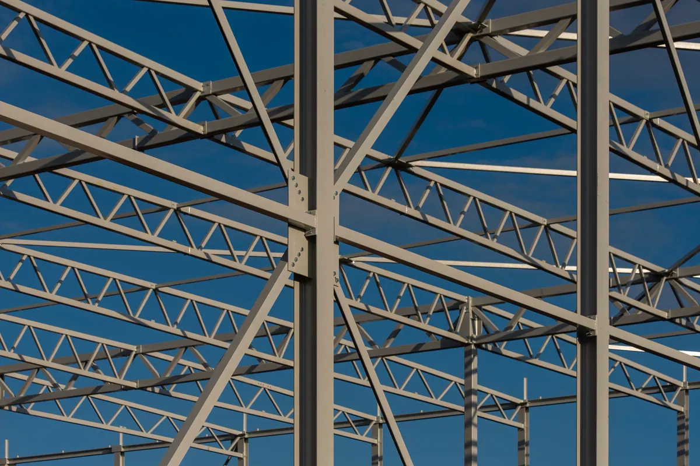
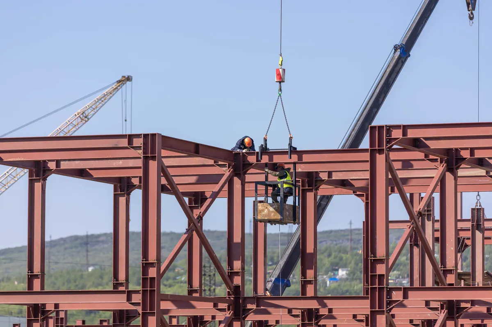

Estrutura metálica de ponta a ponta, com um responsável só
Esta página trata da estrutura metálica como sistema construtivo: quando ela faz sentido, que tipo escolher, como protegê-la da maresia e como a obra anda do cálculo à entrega. O cálculo em si está detalhado em projeto estrutural; a obra civil completa de galpão — sondagem, fundação, piso, instalações e aprovação — está em construção de galpões e quadras; e a montagem de equipamentos, pipe rack e bases de máquina fica em montagem industrial.
O problema mais comum em obra metálica não é técnico, é de interface: o projetista calcula, a serralheria fabrica com o perfil que tem em estoque, o montador descobre na obra que o furo não bate com o chumbador, e cada um aponta para o outro. Aqui o mesmo corpo técnico responde pelo projeto, pela compra do aço, pela fabricação, pela pintura e pela montagem, com ART de cada etapa. Atendemos indústrias, centros de distribuição, comércio, escolas, condomínios e clubes em Vitória, Vila Velha, Serra, Cariacica e região.
O que fazemos em estrutura metálica
Cada etapa pode ser contratada isoladamente ou em pacote. Quando o cliente já tem projeto, a gente começa pela compatibilização; quando já tem o aço, começa pela fabricação.
Fornecimento de aço estrutural
Perfis laminados e soldados, chapas, tubos, perfis formados a frio, telhas e fixadores, com certificado de qualidade do aço e lista de materiais conferida contra o projeto. Detalhes em fornecimento de aço estrutural.
Fabricação de estruturas metálicas
Corte, furação, soldagem, preparação de superfície e pintura em fábrica, com peças marcadas conforme o desenho de montagem. Como a qualidade é controlada antes de a peça sair, veja em fabricação de estruturas metálicas.
Montagem de estruturas metálicas
Plano de içamento, locação de chumbadores, prumo, nivelamento, aperto de parafusos e retoque de pintura em campo. O método de campo está em montagem de estruturas metálicas.
Galpão metálico
Pórtico, terças, contraventamento, cobertura e fechamento para armazenagem, indústria leve e comércio. O que define vão, altura e cobertura está em galpão metálico.
Cobertura metálica para quadra
Cobertura em arco treliçado ou em pórtico para quadra poliesportiva de escola, condomínio e clube, com atenção especial à sucção de vento. Veja cobertura metálica para quadra.
Obra completa em estrutura metálica
Da sondagem à entrega com chave: fundação, estrutura, cobertura, fechamento, piso e instalações num contrato só. O escopo está em obra em estrutura metálica completa.
Quando a estrutura metálica vale mais que o concreto
Estrutura metálica não é sempre a resposta. Para edificação baixa, com vãos curtos e sem pressa, o concreto armado moldado no local costuma ser competitivo. O aço passa a ganhar quando um ou mais destes critérios pesam na obra:
- Vão livre: galpão de armazenagem, quadra e área de manobra pedem espaço sem pilar no meio. O aço vence grandes vãos com peso próprio baixo, o que o concreto só faz com seções robustas ou protensão.
- Prazo: as peças são fabricadas enquanto a fundação é executada. Quando o terreno fica pronto, a estrutura chega pronta para montar — não há espera de cura nem escoramento.
- Peso sobre a fundação: estrutura mais leve significa carga menor no solo. Em terreno fraco, comum em áreas aterradas e de baixada da Grande Vitória, isso pode reduzir a fundação de forma relevante.
- Obra seca e limpa: pouca água, pouco entulho e menos gente no canteiro. Pesa em ampliação dentro de fábrica em operação, em escola e em condomínio habitado.
- Ampliação futura: uma estrutura parafusada, projetada já prevendo a extensão, recebe novos módulos, mezaninos ou pontes rolantes sem demolição. Basta que o projeto original deixe as ligações e as cargas previstas.
- Precisão: peça feita em fábrica tem tolerância de milímetros, o que simplifica a instalação de fechamento, esquadrias e equipamentos.
O contraponto também precisa ser dito: aço exige proteção contra corrosão e, em algumas ocupações, proteção contra incêndio conforme a ABNT NBR 14323 e as exigências do Corpo de Bombeiros. Esses dois custos entram na comparação desde o início — não como surpresa na etapa final.

Tipos de estrutura metálica e onde cada um se aplica
Pórtico de alma cheia
Pilares e vigas em perfil I ligados rigidamente, formando um quadro que resiste sozinho ao vento transversal. Montagem rápida, poucas peças, visual limpo e altura útil bem aproveitada. É a solução típica de galpão de vão médio e de estrutura que vai receber ponte rolante.
Estrutura treliçada
Banzos e diagonais em cantoneira, tubo ou perfil leve formando treliças planas ou em arco. Vence vãos maiores com menos aço, mas tem mais peças, mais ligações e mais superfície para pintar e manter. É comum em cobertura de quadra e em galpão de grande vão livre.
Perfil laminado, soldado ou formado a frio
| Perfil | Como é feito | Onde costuma entrar | Norma de dimensionamento |
|---|---|---|---|
| Laminado | Sai pronto da usina, em bitolas padronizadas (W, HP, U, cantoneira) | Pilares e vigas de pórtico, mezanino, estrutura de piso | ABNT NBR 8800 |
| Soldado | Composto por chapas unidas por solda, com altura e espessura sob medida | Vigas de grande altura, pórticos de vão grande, seção variável | ABNT NBR 8800 |
| Formado a frio | Chapa fina dobrada em U, Z ou U enrijecido | Terças, travessas de fechamento, estrutura leve e treliças pequenas | ABNT NBR 14762 |
A escolha entre eles não é de gosto: depende do esforço, da disponibilidade no mercado e do custo de fabricação. Aço estrutural usual inclui ASTM A36 e ASTM A572 grau 50, entre outros; o grau especificado no projeto é o grau que tem que chegar na obra, com certificado.
Mezanino metálico
Piso elevado dentro de galpão ou loja existente, apoiado em pilares próprios. O cálculo parte da carga de uso — escritório, estoque leve ou armazenagem pesada têm sobrecargas diferentes pela ABNT NBR 6120 — e verifica se o piso existente aguenta os pilares novos. Guarda-corpo e escada fazem parte do projeto, não do acabamento.
Cobertura metálica
Estrutura de telhado sobre alvenaria, estacionamento, área de carga e descarga ou quadra. Aqui quem governa quase sempre é o vento: pela ABNT NBR 6123, cobertura leve e aberta sofre sucção que tenta arrancá-la para cima, e a ancoragem precisa ser dimensionada para isso.
Proteção contra corrosão em ambiente litorâneo
Na Grande Vitória, maresia, umidade alta e poluição industrial formam uma das atmosferas mais agressivas para o aço. A norma ISO 12944 classifica esse tipo de ambiente nas categorias de corrosividade mais altas, e o sistema de proteção tem que ser escolhido para ela — não para um galpão no interior.
- Preparação de superfície: jateamento abrasivo até o padrão especificado. Tinta boa sobre carepa de laminação ou ferrugem descasca em pouco tempo, qualquer que seja a marca.
- Pintura em sistema: fundo rico em zinco ou epóxi, intermediário e acabamento em poliuretano, com espessura de película medida em cada demão, não estimada.
- Galvanização a fogo: imersão da peça em zinco fundido conforme ABNT NBR 6323. Protege por dentro de perfis tubulares e em cantos onde a pintura não chega. Pode receber pintura por cima em sistema duplex.
- Detalhe construtivo: evitar bolsões que acumulam água, prever furos de drenagem, vedar frestas entre chapas e isolar contato entre metais diferentes. Detalhe mal resolvido corrói mesmo com pintura de primeira.
- Fixadores e telhas: parafuso, porca e telha com revestimento compatível com o da estrutura — o ponto fraco costuma ser exatamente o fixador comum ao lado da peça galvanizada.
Estrutura existente com ferrugem, perda de seção ou pintura descascando pede diagnóstico antes de repintura. Esse trabalho está em patologias e corrosão estrutural, e a medição de espessura remanescente pode ser feita com ensaios não destrutivos.

Como a obra acontece, etapa por etapa
- Levantamento e premissas: uso da edificação, vãos, pé-direito, cargas especiais (ponte rolante, mezanino, painel solar), terreno, sondagem e ampliações previstas.
- Projeto estrutural: concepção, cálculo pela ABNT NBR 8800 e NBR 14762, cargas pela NBR 6120 e vento pela NBR 6123, projeto de fundação e memória de cálculo. A partir dele sai a lista de materiais.
- Detalhamento de fabricação: desenho peça a peça, com furação, soldas, ligações, marcação e plano de montagem. É o documento que evita retrabalho na obra.
- Suprimento de aço: compra conforme a lista, conferência de bitola, grau e certificado de qualidade no recebimento.
- Fabricação e pintura: corte, furação, solda por soldador qualificado com referência na AWS D1.1, inspeção visual e, quando o projeto pede, líquido penetrante ou ultrassom; jateamento e pintura com medição de película.
- Fundação e chumbadores: execução da fundação e locação dos chumbadores por topografia, conferidos antes da concretagem. Chumbador fora de posição é o erro mais caro de corrigir depois.
- Montagem: içamento com plano de rigging, prumo e nivelamento, contraventamento provisório, aperto de parafusos e retoque de pintura. Canteiro conforme NR-18 e trabalho em altura conforme NR-35.
- Cobertura, fechamento e acabamento: telhas, calhas, rufos, fechamento lateral e interfaces com alvenaria e esquadrias.
- Entrega: as built, relatórios de inspeção, especificação do sistema de pintura e plano de manutenção, com ART de projeto e de execução — ver laudos técnicos e ART.
Perguntas frequentes sobre estruturas metálicas
Estrutura metálica é mais cara que concreto?
Depende da obra. Em edificação baixa, com vãos curtos e sem pressa, o concreto moldado no local costuma sair mais barato. Em galpão, quadra coberta, mezanino e ampliação dentro de área em operação, o aço tende a compensar pelo vão livre, pela fundação mais leve e pelo prazo menor de canteiro. A comparação só é justa quando inclui fundação, prazo, proteção contra corrosão e, quando exigida, proteção contra incêndio.
Vocês fazem só o projeto ou também fabricam e montam?
Fazemos as duas coisas. Podemos entregar apenas o projeto estrutural com detalhamento, fornecer o aço, fabricar, montar ou conduzir a obra inteira. Quando o cliente já tem projeto de terceiros, fazemos a compatibilização antes de fabricar. Em qualquer formato, cada etapa sai com ART registrada no CREA-ES.
Qual a melhor proteção contra corrosão perto do mar?
Não existe uma resposta única, mas existem regras. Em atmosfera marinha, a proteção começa na preparação de superfície por jateamento e segue com um sistema de pintura especificado para alta corrosividade, com espessura medida. Galvanização a fogo, sozinha ou com pintura por cima em sistema duplex, é indicada para peças expostas, tubulares ou de difícil manutenção. O detalhe construtivo, sem pontos de acúmulo de água, pesa tanto quanto a tinta.
Dá para ampliar um galpão metálico existente?
Na maioria dos casos, sim. Primeiro verificamos a estrutura existente: estado de conservação, perfis, ligações e se ela suporta as cargas novas, inclusive o vento sobre a parte ampliada. Se o projeto original previu a ampliação, a extensão é direta; se não previu, pode ser necessário reforçar pórticos ou criar uma junta estrutural entre o prédio antigo e o novo.
O que preciso ter para pedir um orçamento de estrutura metálica?
O mínimo é a finalidade da obra, as dimensões aproximadas de planta e altura, a localização do terreno e se haverá carga especial, como ponte rolante, mezanino ou painel solar. Se já existir projeto arquitetônico, sondagem ou projeto estrutural, isso acelera muito a proposta. Sem projeto, o primeiro passo é o projeto estrutural, que é o que torna os orçamentos de aço e de montagem comparáveis.
Estruturas metálicas na Grande Vitória
Projeto, fabricação e montagem para indústria, comércio, escolas e condomínios da região:
Tem uma obra metálica em vista?
Mande a finalidade, as dimensões e a localização. Retornamos com o caminho técnico e a proposta.